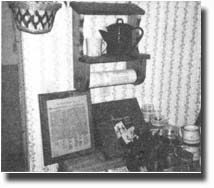

If you now operate, or have ever operated, a successful home business that was inspired by an article you read in MOTHER, tell us about it in around 500 words (write to Bootstrap Businesses, THE Mother Earth News(restricted) 105 Stoney Mountain Road, Hendersonville, North Carolina 28791): Be sure to mention when and where you started your venture and with how much "seed money" what you make (net), and anything else that might be of assistance to other entrepreneurs. If your story is used in this column, you'll receive [1] the satisfaction of knowing that you may help someone else start a business and [2] a free twoyear new or renewal subscription to THE Mother Earth News(restricted)
As an artist living in a small town, I thought I might be able to use a few of the ideas contained in the article "Paint 'House Portraits' " (on page 38 of MOTHER NO. 62) to bring in extra money that would supplement the Social Security disability income I've been receiving since I was permanently injured in an automobile accident.
Though I began by doing oil paintings of individual houses (as the author of the article did), I soon found that I was being asked for duplicates ... and because I wasn't equipped to make photographic reproductions of my originals, I could fill the reprint orders only by hand-painting duplicates.
Therefore, I decided it would make sense to experiment with a medium that lends itself to producing several copies at one time, and I settled on making woodblock prints. I also began to concentrate on some of the older houses and commercial buildings around town, because I felt these would generate a greater demand for multiple prints than would contemporary dwellings.
For my "test case", I selected an abandoned stone icehouse that was built around the turn of the century. After sketching and photographing the building from various angles, I carved the blocks I needed and proceeded to print my initial run of 20 four-color woodcuts.
A friend at the local newspaper did a story on the icehouse, and that was all the advertising it took for me to sell my entire first edition in a hurry. (I made one extra copy for the newspaper staff to hang in their office.)
I sold ten of the prints, unframed, for $ 10 each ... the remaining ten, edged in salvaged weathered barn wood, brought $20 apiece, giving me a gross income of $300 from my initial run. The maple blocks I used cost me $9.98, and the ink was $8.00. 1 also paid $6.00 for rice paper, $5.60 for mat board, and $4.99 for a quart of polyurethane varnish. These expenses left me with a $265.43 profit for the approximately ten hours of work involved.
I've gone on to repeat my success with pictures of other buildings, first approaching the owner to get permission ... and, possibly, a commission. When I do get a commission, that money usually covers the cost of materials for the first run of the portrait, and my sales of the rest of the prints are then pure profit. I sell unframed woodcuts for $10 to $25, adding the cost of any additional materials if the customer prefers a framed engraving.
I've found that my best single market is an annual street fair held here in September. Thereafter renting a $10 booth-I can display my building portraits and other works, and take orders for new jobs, as well.
S.C. Morris
Knob Noster, Mo.
The interior of our new home was unfinished when I was caught in a layoff last year ... and, being short on income and long on time, I decided to complete the job myself. It turned out fine, too. And that "practice", coupled with a good dose of inspiration from MOM's Bootstrap Businesses column, gave me the confidence to use my newly honed skills in a home-based woodcraft business.
I began by making decoupage plaques... since I could fashion them without having to invest much cash in tools and materials. I started with a borrowed jigsaw, a small hand plane, a packet of sandpaper, and a good-quality paintbrush. Working with a 14-foot 1 X 12 pine board (it cost 49 cents per foot), I was able to make a dozen 12" X 13-1/2" wooden rectangles, which I darkened with a walnut stain (purchased at $2.99 for an 8-ounce can), decorated with gluedon prints or historic documents (such as a copy of the U.S. Constitution), and then coated with clear polyurethane varnish (costing $5.07 for a quart container).
I relied solely upon word-of-mouth advertising, and was easily able to sell my first 12 decoupage plaques for $10 each. My materials expenditure for that batch totaled $16.17 (without considering the cost of the tools... since, with care, they should last indefinitely), so my profit was $103.83 for about eight hours' work.
Cheered by my quick success, I added towel racks, tabletop reading or music stands, and other items to my repertoire, and I recently cleared $230, in one week, from the sale of such decorative and functional items. Also, I've slowly collected additional tools, which make my job easier and enable me to tackle the more complex tasks I run into with special orders.
In fact, among the several requests I've had for custom projects was an order from a neighbor who wanted me to build a child's table and chairs. (I modeled the seats after the Zapotec stools described in the article on page 25 of MOTHER NO. 69.)
I'm getting a great deal of satisfaction from working at home and at my own pace, and I'm grateful to MOM for helping to give me the courage to try it "on my own".
H.F.R.
Smyrna, Tenn.
Last spring, with the demands of a new homestead added to my other "jobs" as a fulltime student and a mother, I was faced with a challenge: I couldn't leave my home and children for "regular" employment, but I did need to come up with a way to earn some extra cash. So I turned to THE Mother Earth News(restricted), and found my answer in Dorothy Bowen's article, "Pick Poke for Profit", on page 23 of issue 58. Because we have 80 acres of woods and bottomland, I felt sure that I could find, harvest, and sell the wild greens without making a great investment of time or money.
The following morning-a Saturday-my daughters and I left the house armed with paring knives and large garbage bags, and in short order we filled one of the plastic sacks with tender 4" to 6" shoots and three others with young green leaves. We toted our bounty back to the house, filled the bathtub with cool water, and washed the freshly cut produce. We then drained the greens, sacked them in paper grocery bags, loaded the car, and drove to a nearby outdoor flea market, where-after paying a $2.00 fee-we set up shop with a "Poke Sallet for Sale" sign taped to the car door.
Well, in less than three hours we had sold all 17 of our sacks of poke, and had taken orders for 10 more bags, which we were to deliver to a neighborhood center the following Wednesday. We charged $2.50 for each sackful of greens, and earned a profit of $40.50 for our first day's effort (after deducting the $2.00 flea market fee).
Then, on my next day off, I obtained permission from several neighbors to pick poke on their land, and-for the remainder of that month-we sold an average of 16 sacks of greens each weekend ... bringing in a total profit of $152.
The income from my poke-picking business has paid our electric bill and kept gas in the car all summer, and enabled me to stash some cash for emergencies and fall school expenses. [EDITOR'S NOTE. Be sure to consult a goodfield guide before collecting any wild edibles.]
Rosemarie Randolph
Mayfield, Ky.
|
 |
|
|